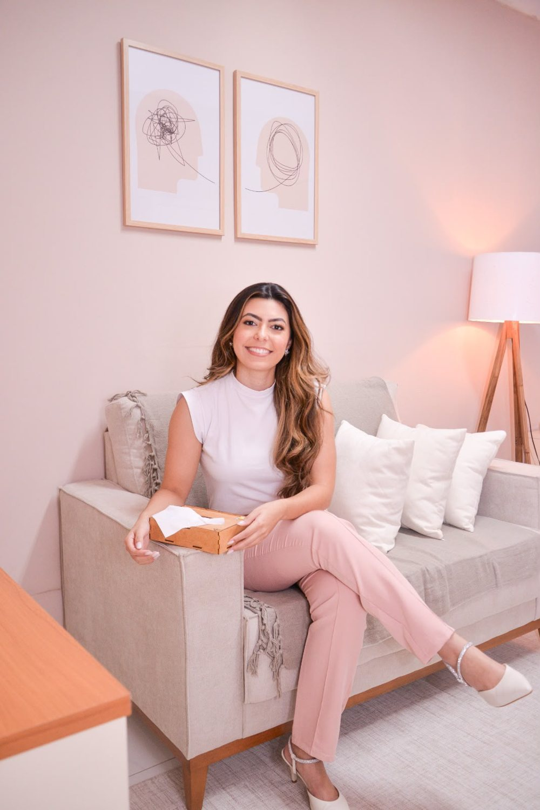
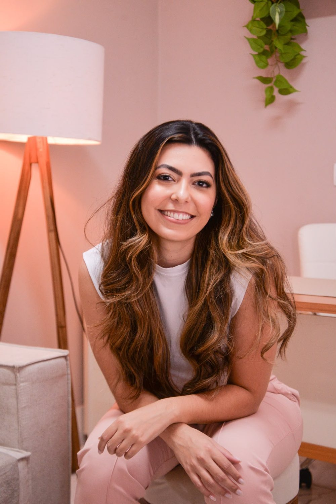

VOCÊ SE IDENTIFICA?
Você não precisa esperar ficar insuportável para pedir ajuda.
Quero agendar agoraTEMAS QUE ATENDO
Esses são alguns dos temas que eu atendo, entre outros. Não encontrou o seu? Me conta pelo WhatsApp.
Para quando a cabeça não desliga, tudo parece urgente e sobra pouco espaço para você.
Mudanças de carreira, pressão no trabalho, decisões difíceis e o equilíbrio entre trabalho e vida pessoal.
Vínculos que desgastam, dificuldade de colocar limites e conflitos que se repetem.
Entender quem você é, o que quer e como fazer escolhas mais alinhadas com você.
Para quem se cobra demais, se compara o tempo todo e esquece de se tratar com gentileza.
Emoções intensas, escola, amizades, família e a construção de quem se é, com um espaço só do adolescente.

QUEM VAI TE ATENDER
Sou psicóloga clínica, formada pela Unicesumar, com MBA em Gestão de Talentos e Comportamento Humano pela UFPR e pós-graduanda em Gestalt-terapia pelo Gestalt Paraná.
Atendo Mulheres e Adolescentes em um espaço acolhedor, leve e seguro, para que você possa falar sobre o que sente sem medo de ser julgada.
DEPOIMENTOS
Avaliações 5 estrelas de pacientes, na íntegra e sem identificação.
O PRIMEIRO PASSO É SEU
Mesmo em meio aos desafios, é possível encontrar beleza, equilíbrio e crescimento pessoal. Cada semana adiando é mais uma semana carregando tudo sozinha.

PERGUNTAS FREQUENTES
Reuni aqui as perguntas que mais recebo. Se a sua não estiver na lista, é só me chamar.
É um primeiro encontro para você contar, no seu ritmo, o que está vivendo. A partir daí, entendemos juntas como posso te ajudar e como seguir.
Os dois. Atendo presencialmente em Sarandi/PR e Online, por videochamada, de onde você estiver.
Não. Se algo tem pesado no seu dia a dia, tirado seu sono ou sua leveza, já é motivo suficiente para buscar ajuda. Quanto antes, melhor.
Sim. O sigilo é um dever ético da psicóloga, previsto no Código de Ética Profissional do Psicólogo. Você pode falar com segurança.
Sim. Atendo adolescentes oferecendo um espaço seguro e só deles para falar sobre o que sentem. Pelo WhatsApp eu explico como funciona a participação dos responsáveis.
Valores, horários e formas de pagamento eu passo direto pelo WhatsApp. É só mandar uma mensagem.
Clique em qualquer botão verde desta página. Você cai direto na conversa comigo, com a mensagem já pronta, e escolhemos juntas o melhor horário.